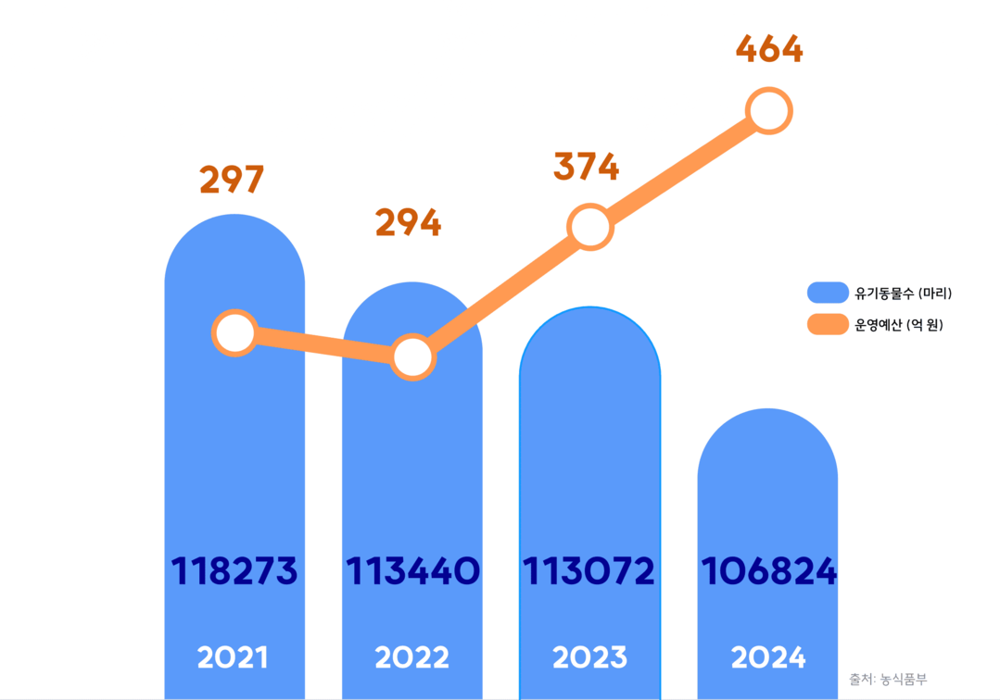
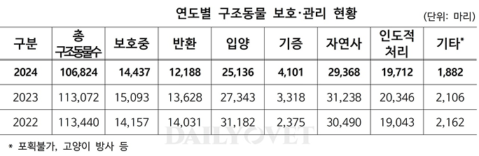
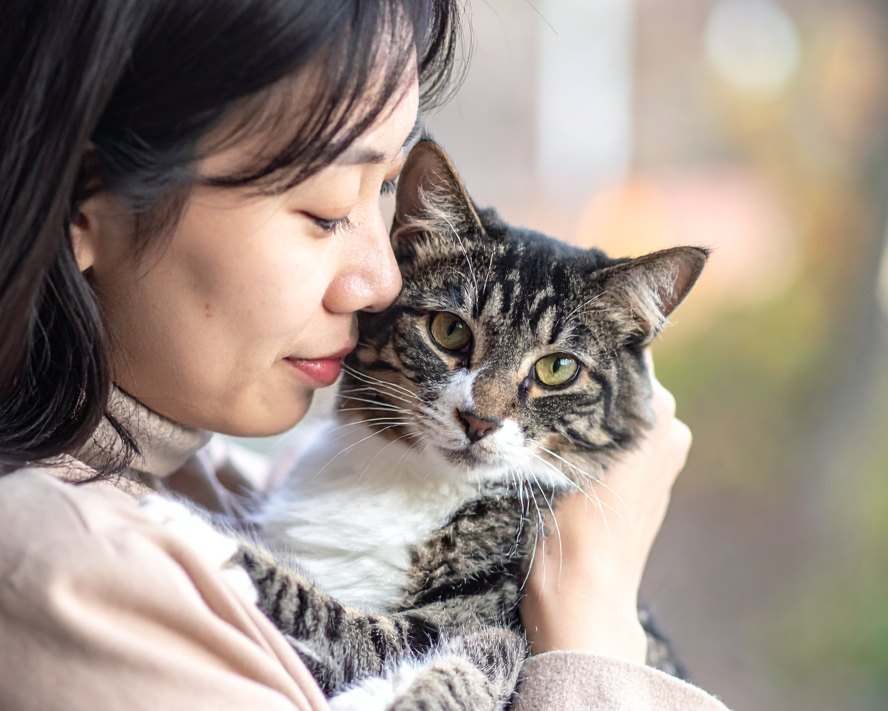
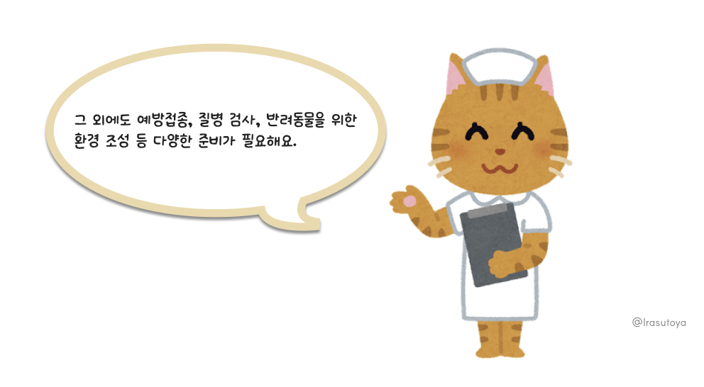
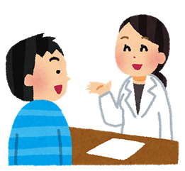
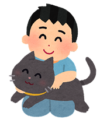
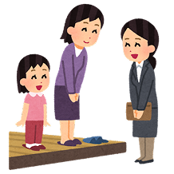

그중 절반 이상은 새 가족을 만나지 못합니다.
출처: 농식품부
보호소의 공간은 한정되어 있고, 들어오는 동물은 끊이지 않습니다. 먹이와 치료비, 봉사 인력까지 늘 부족합니다.
시간이 지나면 안타깝게도 안락사 대상이 되기도 합니다. 출처: 데일리벳
‘입양’의 법률적 의미는 법률 등의 절차를 통하여 친자관계를 형성하는 것입니다.
즉, 입양의 개념에서 바라본 반려동물은 소유권을 이전할 수 있는 물건이 아닌 살아있는 생물이자 가족의 구성원이라고 할 수 있습니다.
✅ 반려동물을 맞이할 환경적 준비, 마음의 각오는 되어 있습니까?
✅ 한번 인연을 맺은 동물은 끝까지 책임지고 보살피겠다는 결심이 섰습니까?
✅ 모든 가족과는 합의가 되었습니까?
✅ 반려동물을 위해 공부할 각오는 되어있습니까?
✅ 아플 때 적절한 치료를 제공해줄 수 있습니까?
✅ 입양으로 인한 경제적 부담을 짊어질 의사와 능력이 있습니까?
✅ 우리 집에서 키우는 다른 동물과 잘 어울릴 수 있을지 고민해보았습니까?
1. 보호소 방문 및 상담
보호소를 직접 방문해 동물의 건강 상태와 성격을 확인한다. 입양 전 상담을 통해 생활환경이 적합한지 함께 점검한다. 2. 입양 신청서 작성
입양을 희망하는 이유, 돌봄 계획 등을 자세히 적는다. 보호소는 이를 바탕으로 입양자의 책임감과 여건을 평가한다.3. 사전교육 및 면담
반려동물 양육에 필요한 기본 지식과 주의사항을 이수한다. 입양 후 발생할 수 있는 문제를 예방하기 위한 단계이다.4. 입양 확정
입양이 승인되면 책임있는 양육을 약속하는 서약서를 작성한다. 이후 필요한 서류 절차를 마치고, 새 가족을 맞이하게 된다! 5. 사후관리
보호소는 일정 기간 입양 가정을 방문하거나 연락을 통해 확인한다. 잘 적응하고 있는지, 돌봄 환경이 안정적인지 살펴보는 과정이다. 🔴 반려동물 등록 제도란?
반려동물을 가족으로 맞이했다면, ‘등록’은 첫 번째 의무! 주인을 잃은 반려동물을 쉽게 찾고, 유기나 학대를 예방하기 위한 제도.
외장칩/내장칩의 형태로 위치를 파악할 수 있음
🔴 등록 대상
2개월령 이상 개
(2024년 기준 고양이 등록은 일부 지자체 시범 운영 중)
🔴 등록 장소
동물병원, 구청 또는 지정된 동물등록대행기관
🔴 등록하지 않으면?
미등록 시 최대 100만 원 이하의 과태료 부과. 또한 유실·유기 시 주인 확인이 어려워 구조·보호가 늦어질 수 있음.
작은 관심이 큰 변화를 만듭니다.
반려동물 입양은 순간의 호기심이나 흥미로 결정하면 안됩니다.
신중하게 마음을 다해 선택한 후에는, 끝까지 사랑과 관심으로 함께해 주세요.
반려동물과 보호자는 서로에게 단 하나뿐인 존재입니다.